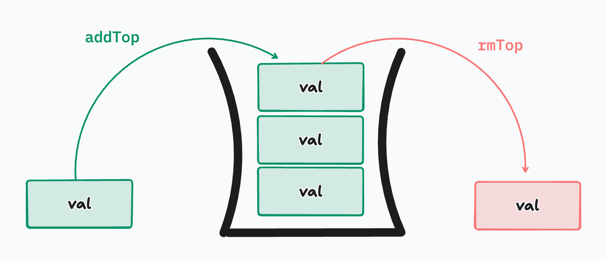
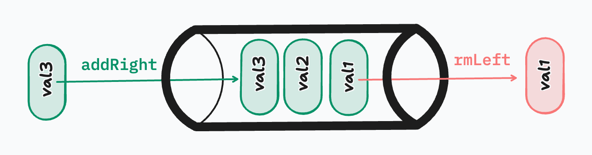

📅 Friday, November 13, 2026
Stacks and Queues
Sometimes the newest item should go next (undo), and sometimes the oldest (a line at a coffee shop). Stacks and queues are lists with one rule about which item comes out next. You build both in Python, watch Python's own call stack, and time why pop(0) is slow. Everything opens in a new tab, so keep this page open as your home base.
Stacks and Queues
LIFO / FILO and FIFO, a Stack class (addTop, removeTop, peek), the call stack, a Queue class (addRight, removeLeft, peek), why pop(0) is O(n), and when to pick each.
Cheat sheet
Ask: who goes next?
| Stack | Queue | |
|---|---|---|
| Next out | the newest | the oldest |
| Rule | LIFO / FILO | FIFO |
| Add | append · O(1) | append · O(1) |
| Remove | pop() · O(1) | pop(0) · O(n) |
| Look | [-1] · O(1) | [0] · O(1) |
| Used for | undo, the call stack, backtracking, brackets | jobs, requests, messages, BFS |
pop(0): every other item moves one seat left, so it's O(n). We use it in class to keep the queue easy to read. A fast queue in Python: collections.deque with append and popleft(), both O(1).
Homework
In this order, top to bottom (each is a little harder): (1) Data Structures I, (2) Valid Parentheses (LeetCode).
1 · Get the assignment
- Open data-structures-I on GitHub and click Fork → Create fork.
- Clone your fork and open it:
VS Code may offer to Reopen in Container. You can skip it: plain
git clone https://github.com/YOUR-USERNAME/data-structures-I.git cd data-structures-I code .python3on your laptop is enough.
2 · Build the Stack, then reverse a string
- Open
Stack.py. The comments list the methods. They're today's methods with the usual names:In class In the homework addToppushremoveToppoppeekpeek(new) size(how many items) ·is_empty(True or False) - Write a function that takes a string and returns it reversed, using your Stack: push every letter, then pop them all.
- Test it with prints at the bottom of the file, then run it:
python3 Stack.pyIf this breaks:
AttributeError: … has no attribute 'push'= the method isn't indented inside the class (4 spaces, like__init__).
3 · Build the Queue
- Open
Queue.py:enqueue(join the line),dequeue(leave the line),peek,size,is_empty. - Its comments add at the beginning of the list and remove from the end. That's still first in, first out, just facing the other way from class. Either end can be the front: add at one end, remove at the other.
- Test it with prints, then
python3 Queue.py. Check: three in, then dequeue → the first one you added comes out.If this breaks: the newest comes out first? You added and removed at the same end: that's a stack.
4 · Commit and push
- Or ask Claude (in the assignment folder):
git add -A git commit -m "Stack and Queue" git pushRun git status and show me the list of files. Then suggest a commit message for my Stack and Queue and wait for my approval. After I approve, commit and push to my fork.If this breaks: 403 / "Permission denied" on push = you cloned Code Platoon's repo, not your fork.
git remote set-url origin https://github.com/YOUR-USERNAME/data-structures-I.git
5 · Valid Parentheses (LeetCode)
- Open Valid Parentheses (free account) and pick Python3.
- Hint: every opening bracket waits until its closing bracket arrives. Which one should close first: the oldest open bracket, or the newest?
- Finished lecture folderstacks.py, undo.py, call_stack.py, queues.py, coffee.py and speed.py, exactly as they end up in class.
- Python: lists as stacks and queuesThe Python tutorial's version of today, and why it recommends deque for queues.
- Python: collections.dequeThe fast queue: append and popleft are both O(1).
- The curriculumData Structures & Algorithms overview, every DS lesson and its assignments.
Diagrams

